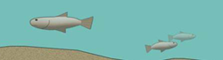

FISK
Fisk på egg- og larvestadiet er spesielt sårbar for olje og andre kjemikalier. Når oljen brytes ned i vannmassene (dispergeres) dannes organiske forbindelser som blandes inn i vannet.

Forsøk har vist at disse kjemikaliene er svært giftige for fiskeegg og -larver. Fiskeegg og larver kan forekomme i store konsentrasjoner i havet, og i tillegg har de liten evne til egenbevegelse. Dette gjør at de er svært sårbar for olje i vannmassene.